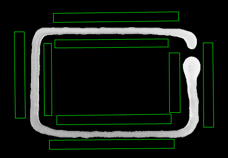
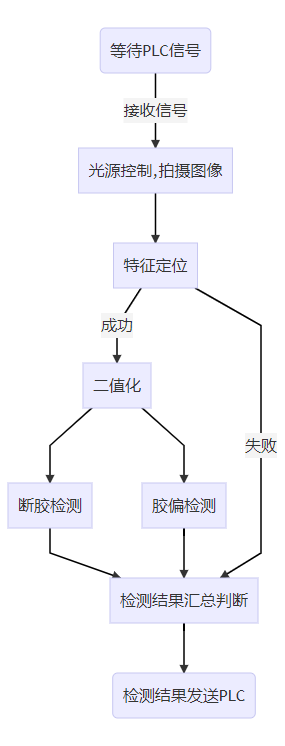
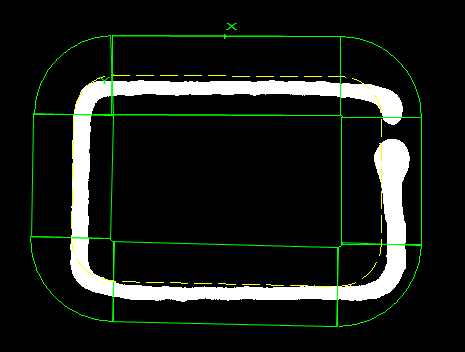

Dự án này chủ yếu kiểm tra chất lượng keo trên chi tiết, các lỗi kiểm tra bao gồm đứt keo, keo lệch.
Hình dưới đây là sản phẩm chi tiết cần kiểm tra, vùng màu trắng dạng thanh là vùng điểm keo, yêu cầu keo phải liên tục, không được có hiện tượng đứt keo; đồng thời keo phải nằm trong vùng quy định, không được lệch keo, tức là vùng màu xanh lá không được có keo.


Xác định đặc điểm
Xác định đặc điểm chọn đường viền cạnh keo, như hình dưới.

Kiểm tra đứt keo
Kiểm tra đứt keo dùng “Công cụ kiểm tra bề rộng cạnh đường cong”, vùng kiểm tra là đường viền cạnh keo, như hình dưới.

Kiểm tra lệch keo
Kiểm tra lệch keo dùng “Công cụ Blob”, vùng kiểm tra là vùng ranh giới trong ngoài đường viền keo, hình dưới là vùng kiểm tra phía ngoài cạnh trên, dùng nhiều công cụ Blob có thể bao phủ toàn vùng kiểm tra.

Kết quả chạy trên giao diện sản xuất như hình dưới.

参见“\Samples\应用案例\点胶类项目\胶水检测项目\胶水检测.gvp”。